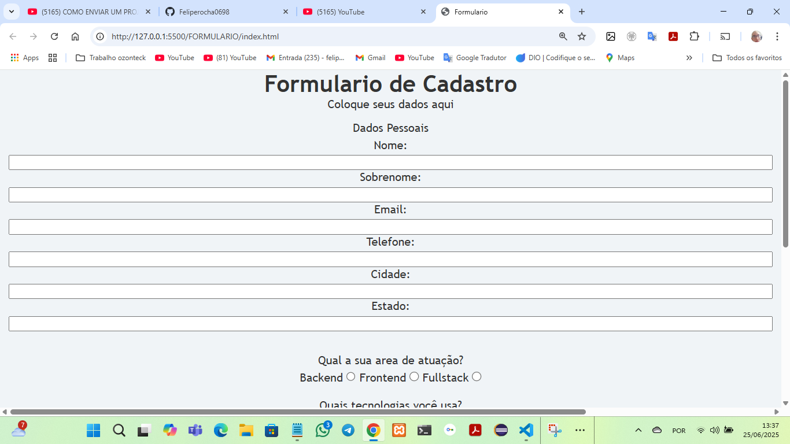
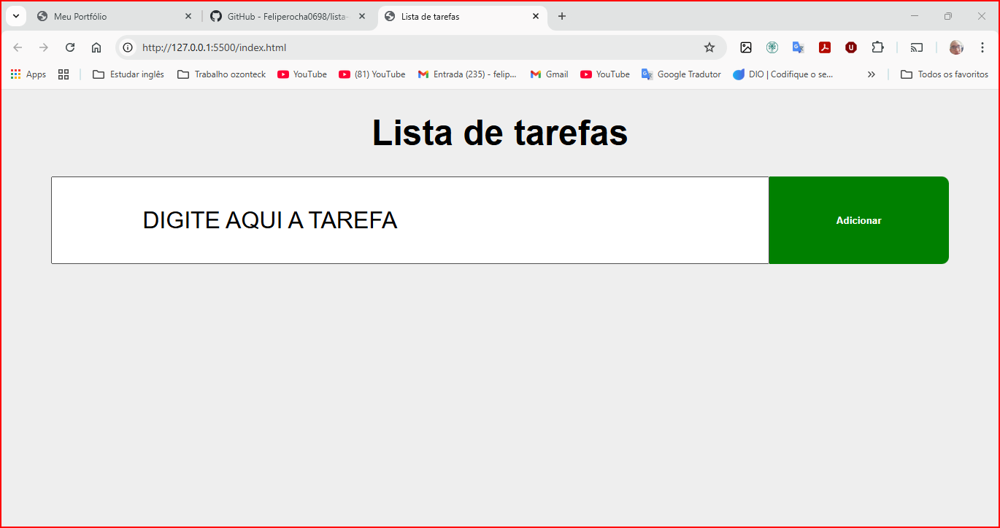
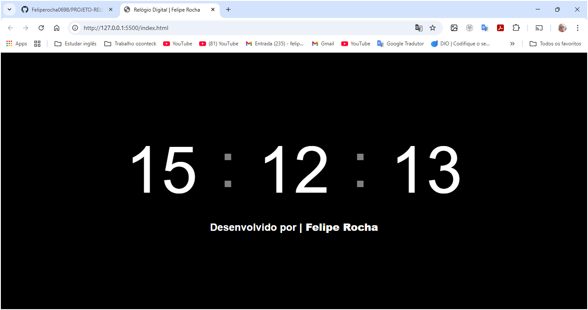

Sites profissionais
Criação de sites institucionais, landing pages e soluções web personalizadas para apresentar seu negócio e facilitar o contato.
Sites institucionais e landing pages.
Solicitar orçamentoTecnologia a serviço do seu negócio
Felipe Rocha Maia
Analista e Desenvolvedor de Sistemas
Desenvolvimento de sites, sistemas e aplicativos personalizados para empresas e profissionais no Brasil e no exterior.
Conversar pelo WhatsApp (abre em nova aba)Atendimento remoto · Brasil e exterior
Análise e Desenvolvimento de SistemasGraduação
Segurança da InformaçãoPós-graduação
O que posso desenvolver para você
Do primeiro site a uma solução personalizada, o ponto de partida é entender o que o seu negócio precisa.
Criação de sites institucionais, landing pages e soluções web personalizadas para apresentar seu negócio e facilitar o contato.
Sites institucionais e landing pages.
Solicitar orçamentoDesenvolvimento de sistemas web para necessidades específicas, com funcionalidades definidas a partir dos processos da sua empresa.
Funcionalidades definidas para cada projeto.
Solicitar orçamentoCriação de aplicativos e soluções digitais conforme as necessidades de cada projeto, considerando o público, as funcionalidades e o contexto de uso.
Desenvolvimento conforme o projeto.
Solicitar orçamentoAtualização de conteúdo, correções, melhorias de navegação e otimização para manter seu site útil e atualizado.
Melhorias e atualizações conforme a necessidade.
Solicitar orçamentoPlanejamento, configuração, acompanhamento e otimização de campanhas de Google Ads conforme os objetivos definidos para o negócio.
O investimento em anúncios é separado do valor cobrado pela gestão.
Solicitar orçamentoUma parceria direta
Sou desenvolvedor independente. Você conversa diretamente comigo para definir prioridades, alinhar expectativas e construir uma solução que faça sentido.
Conheça minha trajetória →Escopo e necessidades alinhados antes do desenvolvimento.
Atenção à navegação, à acessibilidade e ao uso em diferentes telas.
Organização, desempenho e cuidado com a segurança orientam o projeto.
Da ideia à prática
Uma seleção dos projetos já apresentados no meu portfólio. Os links levam ao código no GitHub; não representam trabalhos contratados por clientes.

Projeto de portfólio
Interface de cadastro de desenvolvedores com campos para informações pessoais e habilidades técnicas.
Ver projeto no GitHub (abre em nova aba)
Projeto de portfólio
Projeto para organização de atividades, apresentado com sua interface e código no GitHub.
Ver projeto no GitHub (abre em nova aba)
Projeto de portfólio
Uma interface para apresentação da hora em formato digital.
Ver projeto no GitHub (abre em nova aba)Conhecimento que se transforma em soluções
A tecnologia transformou minha vida, trazendo uma profissão e novas oportunidades. Hoje, utilizo meus conhecimentos para ajudar empresas e profissionais a construir sua presença digital.
Sou graduado em Análise e Desenvolvimento de Sistemas e pós-graduado em Segurança da Informação.
Mais sobre mim →